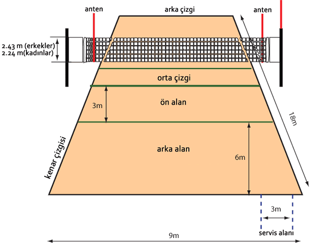

Voleybol Oyun Sahasının Ölçüleri Nasıl Olmalıdır?
yun alani, 18-9 m ölçülerinde bir dikdörtgendir ve her yönde en az 3 m genişliğinde olan bir serbest bölge ile çevrilmiştir. Oyun sahasinin üzerinde bulunan serbest oyun boşluğu, her türlü engelden arindirilmiş olmalidir. Serbest oyun boşluğu, oyun sahasi yüzeyinden ölçüldüğünde en az 7 m yüksekliğinde olmalidir. FIVB, Dünya ve Resmi Müsabakalarinda serbest bölge yan çizgilerden ölçüldüğünde 5 m ve dip çizgilerden ölçüldüğünde 6.5 m genişliğinde olmalidir. Serbest oyun boşluğu ise oyun sahasi yüzeyinden ölçüldüğünde en az 12.5 m yüksekliğinde olmalidir.